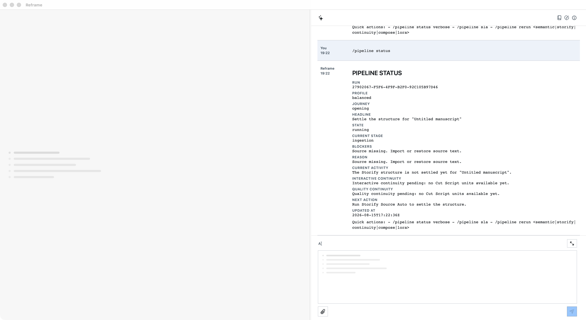

Read-only
The three live runs recorded the status lifecycle without a draft mutation.
/pipeline statusA read-only view of current pipeline truth: state, stage, blockers, current activity, and next action.
It does not mutate the draft or widen a provider lane. The observed empty active-manuscript state reported missing source text and the next action.

The three live runs recorded the status lifecycle without a draft mutation.
Three runs recorded requested, accepted, running, and succeeded lifecycle phases, with matching AX results.
No released App build is claimed. The release allow-list remains empty.